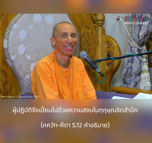

ดวงวิญญาณผู้อุทิศตนเสียสละอยู่เสมอได้รับความสงบที่บริสุทธิ์เพราะถวายผลของกิจกรรมทั้งหมดแด่ข้า ขณะที่ผู้ไม่ร่วมกับองค์ภควานฺโลภในผลแห่งแรงงานของตนเองจะถูกพันธนาการ



ข้อแตกต่างระหว่างบุคคลในกฺฤษฺณจิตสำนึก และบุคคลในร่างกายจิตสำนึก คือ คนหนึ่งยึดมั่นกับองค์กฺฤษฺณ และอีกคนหนึ่งยึดติดกับผลของกิจกรรมของตนเอง บุคคลผู้ยึดมั่นต่อองค์กฺฤษฺณ และทำงานเพื่อพระองค์เท่านั้นจะเป็นผู้หลุดพ้น และจะไม่มีความวิตกกังวลกับผลงานของตนเองอย่างแน่นอน ใน ภาควต อธิบายว่าสาเหตุแห่งความวิตกกังวลกับผลของกิจกรรม เกิดจาการทำหน้าที่ในทัศนคติของสิ่งคู่โดย ไม่มีความรู้แห่งสัจธรรมที่สมบูรณ์ องค์กฺฤษฺณทรงเป็นสัจธรรมที่สมบูรณ์สูงสุด องค์ภควานฺในกฺฤษฺณจิตสำนึกไม่มีสิ่งคู่ ทุกสิ่งทุกอย่างที่มีอยู่เป็นผลผลิตจากพลังงานขององค์กฺฤษฺณ และองค์กฺฤษฺณทรงดีไปหมด ฉะนั้น กิจกรรมในกฺฤษฺณจิตสำนึกจึงอยู่ในระดับที่สมบูรณ์นั้นเป็นทิพย์ และไม่มีผลทางวัตถุ ผู้ปฏิบัติจึงเปี่ยมไปด้วยความสงบในกฺฤษฺณจิตสำนึก แต่ผู้ที่ถูกพันธนาการอยู่ในการคำนวณผลกำไรเพื่อสนองประสาทสัมผัสไม่สามารถได้รับความสงบเช่นนี้ นี่คือความลับของกฺฤษฺณจิตสำนึก ความรู้แจ้งที่ว่าไม่มีสิ่งอื่นใดมีอยู่นอกจากองค์กฺฤษฺณ คือ ฐานแห่งความสงบและความไม่กลัว